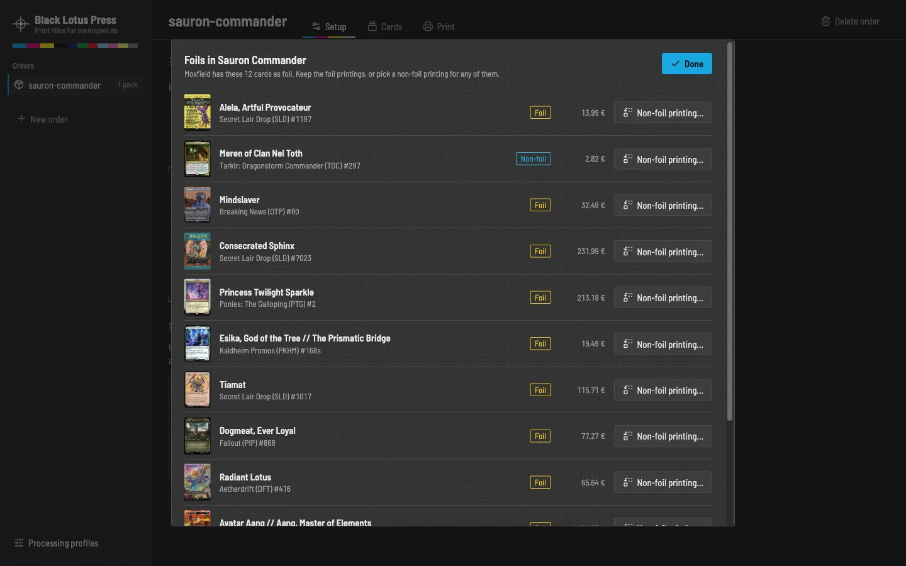

Your Moxfield deck, printed.
Black Lotus Press turns Moxfield decks into print-ready playtest cards from meinspiel.de. It takes the exact printings from Scryfall, cleans them up, upscales them, converts them to the printer's CMYK and uploads the packs to your meinspiel.de account.
Free and open source under the MIT license. Portable ZIPs, the command-line tool and release notes are on the release page.
On a Mac: the app is not signed with an Apple certificate, so macOS says it "is damaged" or that Apple "could not verify" it. It is neither. Drag it into Applications, then run this once in Terminal:
xattr -cr "/Applications/Black Lotus Press.app"- 55 cards per packmeinspiel.de's deck format, about 19,95 € plus shipping
- 69 × 94 mm63 × 88 mm cards with 3 mm bleed, corners and borders cleaned up
- CMYK, ISO Coated v2the printer's own colour profile, 10 % brighter because print is darker
- Up to 600 dpiscans upscaled on your graphics card with Upscayl
From deck list to press sheet
Everything happens on your computer. The app only goes online to load decks, card images and card backs, to install Upscayl and to upload, and only when you ask it to.
-
Import your decks
Paste a Moxfield link and pick the boards you want: main board, sideboard, tokens, attractions and the rest. The app takes the exact printings from the deck and looks them up on Scryfall.
- Several decks in one order, each imported on its own.
- Foils from Moxfield can be swapped for non-foil printings right after the import.
- Update a deck later without losing your edits.

-
Check every card
See the whole order as a list or as a zoomable grid. Pick another printing from everything Scryfall has, with Cardmarket prices, or use your own image.
- Different printings for single copies of a card.
- Switch cards off, change quantities, drag them into the print order.
- Warnings for low-resolution scans and cards Scryfall does not know.

-
Proof the press sheet
Every pack appears as a sheet of 55 cards, fronts and backs, the way it will be printed. Brightness and contrast change the preview right away, for the whole order or for single cards.
- Upscaling with live GPU load and temperature.
- Process a single card or the whole order again.
- Two PDFs per pack, with their sizes checked against the upload limit.

-
Upload and order
A browser window opens on meinspiel.de. You log in there yourself, the app never sees your password. Every pack becomes a game in your account, and the app keeps the links to them.
- You choose the box and pay on meinspiel.de, the app never orders anything.
- Or upload the PDFs by hand, they are ordinary files in your orders folder.

The details that make the prints good
- Clean scansRounded corners are filled, scan borders cropped and holo stamps painted over. Borderless art is mirrored into the bleed instead of smeared.
- Your copyright lineKeep the original, blur it, add "Proxy – not for sale", or write your own text in its place.
- Any card backEvery card back from MPC Autofill's database, picked by its ID, with a live preview. Double-faced cards get their real back.
- Tokens as fillerTokens fill the free slots of the last pack and never cost you an extra one.
- Seven upscaling modelsUpscayl installs with one click. Pick the model that suits your cards; the lite model is seven times faster.
- Runs in the backgroundImports, processing and uploads run as tasks you can follow and cancel, while you keep editing.
Questions
Is Black Lotus Press affiliated with meinspiel.de, Moxfield, Scryfall or Wizards of the Coast?
No. It is a free fan project. It uses their public websites the way you would in a browser.
What does printing cost?
meinspiel.de prints decks of exactly 55 cards for about 19,95 € each, plus shipping. A 100-card Commander deck needs two packs. Check meinspiel.de for the current prices.
Can I sell the cards I print?
No. The card images belong to Wizards of the Coast and the artists. Print them for your own playtesting only.
Do I need a powerful computer?
No. Without upscaling, any computer works. Upscaling at 600 dpi uses the graphics card; on an Apple M1 Max it takes 2 to 14 seconds per card, depending on the model.